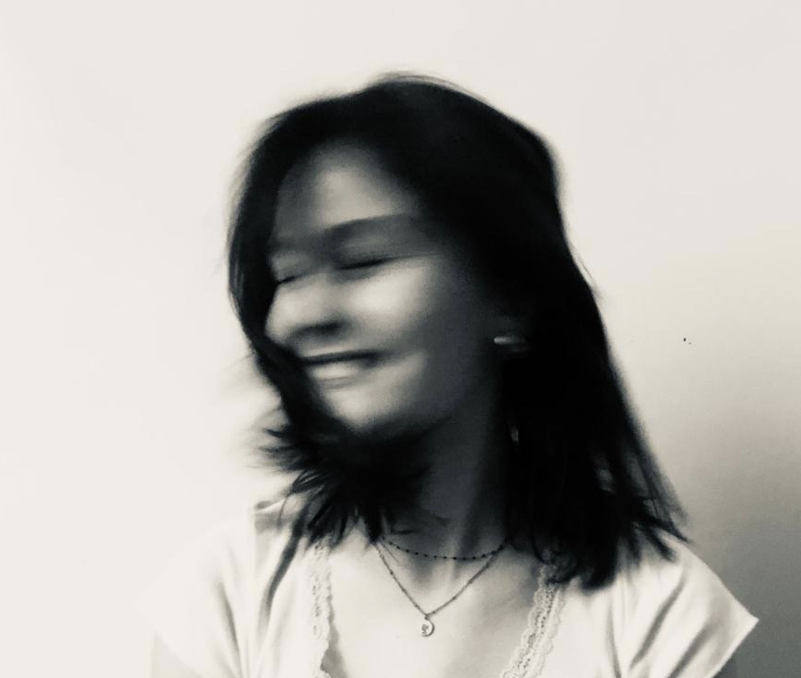

À propos

Expériences
· 2023
TYPIC, agence de création audiovisuelle, 20 ème,
Réalisation d’illustrations pour un motion design, travail avec l’équipe pour un projet, tournage pour une boîte
· 2019-2020
TUMO PARIS, École de création numérique, Paris 1er,
Approche du design graphique, apprentissage des outils numérique pour la création musicale
· 2018
AREP GROUP, agence d’architecture pluridiciplinaire internationale, Paris 13 ème,
Stage d’une semaine où j’ai abordé plusieurs pôles : maquettes 3D, Design Lab pour les gares en France et étude de la signalétique et des affichages
· 2018
CENTRE D’ANIMATION RÉVEBAL, Paris 19 ème,
Stage d’une semaine avec Jean-Luc Barbier : cours des techniques de la photographie, pratique de la photographie argentique dans les rues de Belleville, développement et tirage en laboratoire
Compétences
Adobe Photoshop · · · ·
Abobe Illustrator · · · ·
Adobe Indesign · · · ·
After Effect · ·
Anglais · · ·
Espagnol · ·